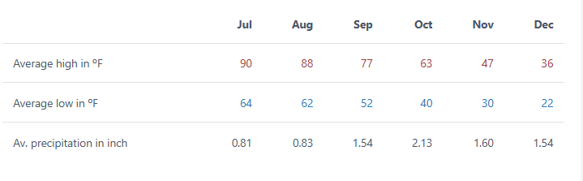
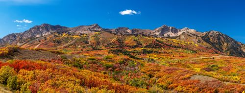
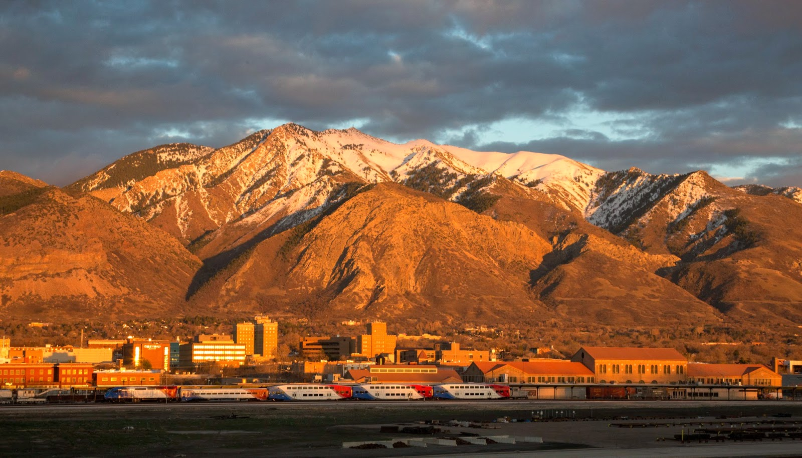

The weather, the landscape, and the daylight all become the embodiment of perfection during the fall season.

Fall lies between the hot summer and the cold winter, resulting in a perfect cool climate. According to USClimateData.com, Ogden, Utah averages temperatures of 52-77℉ in September, 40-63℉ in October, and 30-47℉ in November. Personally, these are ideal temperatures. I do not enjoy being hot and sweaty, or cold and shivering. This makes the fall weather perfect.

The term "Fall," according to Dictionary.com, “is thought to originate in the phrase the fall of the leaf, in reference to the time of year when deciduous trees shed their leaves.” Meaning, the landscape takes a drastic change during this season. The ground turns a pale brown, in contrast to the trees’ leaves turning the right colors of yellow, orange, and red. In my eyes, when the landscape takes this change, it is as beautiful as ever. The juxtaposition of the bright leaves against the decaying ground is breathtaking. This scenery is also limited to how long I can enjoy it before the leaves fall, making it that more special.

While I do enjoy the long hours of daylight in the summer, fall’s daylight schedule is most ideal for my daily schedule. Thanks to TodaySunTimes.com, I was able to see the exact statistics of daylight. Sunrise begins at about 7:30 am, sunset begins at about 6:50 pm, there are about 11.5 hours of daylight, and golden hours are at about 7:30-8:10 am and 6:20-7:00 pm.
I usually wake up at 6-7 am, so I have a chance to witness the sunrise and bask in the morning golden hour. Having 11.5 hours of daylight gives me time to be productive and enjoy the sun. I like to wind down my day at 6 pm, so the sunset being at about 6:50 pm and the evening golden hour from 6:20-7:00 pm is an incredible day to achieve a relaxing winddown.